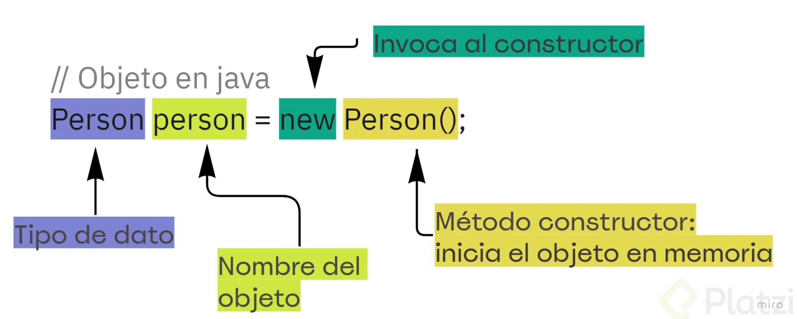
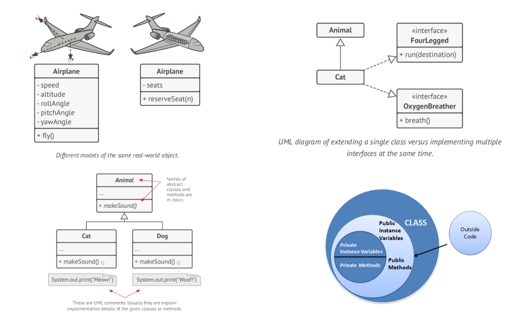

La Programación Orientada a Objetos (POO) apareció como una respuesta a las limitaciones de los paradigmas de programación anteriores, como la programación estructurada. A medida que los sistemas de software crecían en tamaño y complejidad, se volvía cada vez más difícil organizar, entender y mantener el código. La programación estructurada obligaba a dividir los problemas en funciones y datos de manera separada, lo que conducía a duplicación de código, falta de cohesión y dificultades para realizar cambios.
La POO introdujo un modelo más cercano al mundo real, donde los problemas se dividen en entidades llamadas objetos que combinan tanto datos (atributos) como comportamiento (métodos). Esta estructura permite representar conceptos reales de manera intuitiva, facilitando la organización y el mantenimiento del código.
Su origen se remonta a finales de la década de 1960 y principios de los años 70 con el lenguaje Simula, se introdujeron los conceptos de clases y objetos para modelar sistemas de simulación en el mundo real, permitiendo encapsular datos y comportamientos relacionados en una misma estructura.
La Programación Orientada a Objetos trajo consigo múltiples ventajas frente a los paradigmas anteriores:
Organización del código: En la Programación Orientada a Objetos (POO), los datos (atributos) y el comportamiento que opera sobre ellos (métodos) se agrupan dentro de una misma estructura llamada clase. Esto contrasta con paradigmas como la programación estructurada, donde las variables (datos) y las funciones (acciones) no están necesariamente relacionadas ni organizadas juntas de forma lógica. En la POO, al reunir datos y comportamiento en un solo lugar, cada clase representa una unidad coherente que facilita la comprensión del programa y su mantenimiento.
Reutilización de código: La POO ofrece mecanismos como la herencia, que permite crear nuevas clases a partir de clases ya existentes, reutilizando su código y ampliando sus funcionalidades sin necesidad de duplicarlo. Esto no solo ahorra esfuerzo, sino que también reduce la probabilidad de cometer errores al copiar código.
Facilidad para modelar problemas complejos: La POO refleja mejor la realidad al trabajar con objetos, que pueden representar entidades del mundo real (como un coche o una cuenta bancaria) o conceptos abstractos (como una transacción). Cada objeto combina datos y comportamiento, lo que hace que el código sea más intuitivo y cercano al problema que se quiere resolver.
Escalabilidad: Gracias a su diseño modular, la POO facilita el desarrollo de sistemas complejos y de gran tamaño. Cada clase puede desarrollarse y probarse de forma independiente, lo que permite que diferentes partes del programa evolucionen sin afectar al resto. Esto es especialmente útil en proyectos grandes donde trabajan varios equipos.
Mantenimiento y expansión: Gracias a su modularidad y organización, realizar cambios o agregar nuevas funcionalidades resulta más sencillo.
Protección de datos: La POO incorpora el encapsulamiento, que permite proteger los datos internos de un objeto, reduciendo errores y acceso indebido. De esta forma, los datos solo pueden ser manipulados a través de los métodos definidos en la clase, lo que reduce errores y asegura que los datos siempre estén en un estado válido.
La POO se basa en cuatro principios fundamentales:
Una clase es una estructura que define las propiedades y comportamientos comunes que comparten un conjunto de elementos homogeneos.
Una clase describe los datos (atributos o propiedades) y las acciones (métodos u operaciones) que son comunes a una categoría de objetos. Es un modelo o plantilla que define cómo serán los objetos de esa clase, incluyendo qué información almacenan y qué comportamiento pueden ejecutar.
Los niveles de visibilidad determinan quién puede acceder a los atributos y métodos de una clase:
private: Solo accesible dentro de la misma clase.public: Accesible desde cualquier clase.protected: Accesible desde clases del mismo paquete o subclases.Ejemplo básico:
public class Coche {
private String marca;
private String modelo;
private int velocidadMaxima;
// Constructor completo
public Coche(String marca, String modelo, int velocidadMaxima) {
this.marca = marca;
this.modelo = modelo;
this.velocidadMaxima = velocidadMaxima;
}
// Constructor con solo marca y modelo
public Coche(String marca, String modelo) {
this.marca = marca;
this.modelo = modelo;
this.velocidadMaxima = 0; // Valor por defecto
}
// Métodos
public void arrancar() {
System.out.println("El coche ha arrancado.");
}
public void acelerar() {
System.out.println("El coche está acelerando.");
}
public void frenar() {
System.out.println("El coche está frenando.");
}
// Getters y Setters
public String getMarca() {
return marca;
}
public void setMarca(String marca) {
this.marca = marca;
}
public String getModelo() {
return modelo;
}
public void setModelo(String modelo) {
this.modelo = modelo;
}
public int getVelocidadMaxima() {
return velocidadMaxima;
}
public void setVelocidadMaxima(int velocidadMaxima) {
this.velocidadMaxima = velocidadMaxima;
}
}
Un objeto es una instancia concreta de una clase(la creación de un nuevo objeto a partir de la plantilla que representa la clase). Representa un ejemplar único que posee un estado definido por sus atributos, un comportamiento establecido por los métodos de su clase y una identidad que lo diferencia de otros objetos.
Los objetos tienen atributos (estado) y métodos (comportamiento) y una referencia en memoria que lo identifica de forma única(identidad).
En la Programación Orientada a Objetos (POO), un mensaje es el medio por el cual los objetos interactúan para llevar a cabo una acción. Este concepto representa una solicitud que un objeto envía a otro, indicándole que realice una operación específica. En términos prácticos, se traduce en la llamada/invocación/ejecución de un método definido en la clase del objeto receptor. .
Ejemplo:
public class CuentaBancaria {
private double saldo;
public CuentaBancaria(double saldoInicial) {
this.saldo = saldoInicial;
}
public void depositar(double cantidad) {
saldo += cantidad;
System.out.println("Depósito realizado. Saldo actual: " + saldo);
}
public void retirar(double cantidad) {
if (cantidad <= saldo) {
saldo -= cantidad;
System.out.println("Retiro realizado. Saldo actual: " + saldo);
} else {
System.out.println("Fondos insuficientes.");
}
}
}
public class Main {
public static void main(String[] args) {
CuentaBancaria miCuenta = new CuentaBancaria(1000);
miCuenta.depositar(200); // Mensaje enviado al objeto 'miCuenta'
miCuenta.retirar(500); // Mensaje enviado al objeto 'miCuenta'
}
}
new, Referencias y constructores Clase vs Objetos
Los objetos tienen atributos (estado) y métodos (comportamiento).
Los métodos pueden recibir parámetros y devolver valores para realizar operaciones.
Para crear un objeto en Java, se utiliza el operador new, que asigna memoria dinámica en el heap y devuelve una referencia al objeto.
Un constructor es un método especial que se utiliza para inicializar objetos al momento de su creación. Tiene el mismo nombre que la clase y no tiene un tipo de retorno, ni siquiera void. Los constructores se ejecutan automáticamente cuando se crea un objeto de la clase.
Características de los constructores:
La palabra clave this hace referencia al objeto actual. Se utiliza para:
Ejemplo:
public class CuentaBancaria {
private double saldo;
private String titular;
// Constructor completo
public CuentaBancaria(String titular, double saldoInicial) {
this.titular = titular;
this.saldo = saldoInicial;
}
// Método para depositar dinero
public void depositar(double cantidad) {
saldo += cantidad;
System.out.println("Depósito realizado en la cuenta de " + titular + ". Saldo actual: " + saldo);
}
// Método para retirar dinero
public void retirar(double cantidad) {
if (cantidad <= saldo) {
saldo -= cantidad;
System.out.println("Retiro realizado en la cuenta de " + titular + ". Saldo actual: " + saldo);
} else {
System.out.println("Fondos insuficientes en la cuenta de " + titular + ".");
}
}
// Método para mostrar el estado de la cuenta
public void mostrarEstado() {
System.out.println("Titular: " + titular + ", Saldo: " + saldo);
}
}
public class Main {
public static void main(String[] args) {
// Crear varias cuentas bancarias (objetos)
CuentaBancaria cuenta1 = new CuentaBancaria("Juan", 1000);
CuentaBancaria cuenta2 = new CuentaBancaria("Ana", 500);
CuentaBancaria cuenta3 = new CuentaBancaria("Luis", 750);
// Mostrar el estado inicial de cada cuenta
cuenta1.mostrarEstado();
cuenta2.mostrarEstado();
cuenta3.mostrarEstado();
// Enviar mensajes (métodos) para modificar el estado
cuenta1.depositar(200); // Mensaje a cuenta1
cuenta2.retirar(100); // Mensaje a cuenta2
cuenta3.retirar(800); // Mensaje a cuenta3
// Mostrar el estado final de cada cuenta
cuenta1.mostrarEstado();
cuenta2.mostrarEstado();
cuenta3.mostrarEstado();
}
}
El acceso controlado a los atributos se realiza mediante métodos getters y setters.
Ejemplo:
public class Producto {
private String nombre;
private double precio;
public String getNombre() {
return nombre;
}
public void setNombre(String nombre) {
this.nombre = nombre;
}
public double getPrecio() {
return precio;
}
public void setPrecio(double precio) {
this.precio = precio;
}
}
nullUna referencia null indica que la variable no apunta a ningún objeto.
Ejemplo:
Persona persona2 = null; // La referencia no apunta a ningún objeto
Si intentamos acceder a un método o atributo de una referencia null, obtendremos una NullPointerException:
persona2.saludar(); // Error: NullPointerException
El ámbito define la accesibilidad de una variable u objeto dentro de un programa:
Ejemplo:
public class Persona {
private String nombre; // Atributo (ámbito global dentro de la clase)
public void setNombre(String nombre) {
String mensaje = "Asignando nombre"; // Variable local
this.nombre = nombre;
System.out.println(mensaje);
}
}
Los modificadores de acceso definen la visibilidad de los atributos, métodos y clases. Existen cuatro niveles principales:
| Modificador | Visible desde la propia clase | Visible desde clases vecinas | Visible desde subclases | Visible desde clases externas |
|---|---|---|---|---|
| private | ✔ | |||
| sin modificador | ✔ | ✔ | ✔ | |
| protected | ✔ | ✔ | ✔ | |
| public | ✔ | ✔ | ✔ | ✔ |
Clases: Si no se especifica public o cualquier otro modificador, la clase solo será accesible dentro del mismo paquete. Desde fuera del paquete, no se puede acceder ni crear instancias de esa clase.
Métodos y atributos:Si no se especifica un modificador de acceso, los métodos y atributos también serán package-private.Esto significa que solo serán visibles y accesibles desde otras clases dentro del mismo paquete. Desde fuera del paquete, no se podrá acceder a esos métodos ni atributos.
Ejemplo:
public class Persona {
private String nombre; // Solo accesible dentro de la clase
protected int edad; // Accesible en subclases y mismo paquete
public String direccion; // Accesible desde cualquier clase
private void mostrarNombre() {
System.out.println("Nombre: " + nombre);
}
protected void mostrarEdad() {
System.out.println("Edad: " + edad);
}
public void mostrarDireccion() {
System.out.println("Dirección: " + direccion);
}
}
public class Main {
public static void main(String[] args) {
Persona persona = new Persona();
persona.direccion = "Calle Falsa 123"; // Correcto
// persona.edad = 25; // Error: 'edad' es protected
persona.mostrarDireccion(); // Correcto
}
}
En Java, los atributos y métodos estáticos son aquellos que pertenecen a la clase y no a las instancias (u objetos) creados a partir de ella. Este enfoque permite compartir información y comportamiento común entre todos los objetos de una misma clase.
| Aspecto | Métodos Estáticos | Métodos de Instancia |
|---|---|---|
| Pertenencia | Clase | Objeto |
| Acceso a Atributos | Solo a atributos estáticos | A todos los atributos |
| Necesidad de Instancia | No | Sí |
| Uso Ideal | Operaciones generales | Manipulación del estado del objeto |
Cochepublic class Coche {
private String matricula;
private String marca;
private double precio;
private String color;
private static double descuento = 10; // Descuento aplicado a todos los coches
public Coche(String matricula, String marca, double precio, String color) {
this.matricula = matricula;
this.marca = marca;
this.precio = precio;
this.color = color;
}
// Método de instancia para calcular el precio promocional
public double precioPromocional() {
return this.precio - (this.precio * Coche.descuento / 100);
}
// Método estático para modificar el descuento
public static void cambiarDescuento(double nuevoDescuento) {
Coche.descuento = nuevoDescuento;
}
@Override
public String toString() {
return "Coche{" + "matricula='" + matricula + '\'' +
", marca='" + marca + '\'' +
", precio=" + precio +
", color='" + color + '\'' + '}';
}
}
Principalpublic class Principal {
public static void main(String[] args) {
// Crear instancias de coches
Coche c1 = new Coche("1234ABC", "Toyota", 25000, "Rojo");
Coche c2 = new Coche("5678DEF", "Ford", 30000, "Azul");
Coche c3 = new Coche("9101GHI", "BMW", 45000, "Negro");
// Mostrar precios promocionales con el descuento inicial
System.out.println("Precios promocionales:");
System.out.println(c1.marca + " - " + c1.precioPromocional());
System.out.println(c2.marca + " - " + c2.precioPromocional());
System.out.println(c3.marca + " - " + c3.precioPromocional());
// Cambiar el descuento para todos los coches
Coche.cambiarDescuento(15);
// Mostrar precios promocionales con el nuevo descuento
System.out.println("\nPrecios promocionales tras cambiar el descuento:");
System.out.println(c1.marca + " - " + c1.precioPromocional());
System.out.println(c2.marca + " - " + c2.precioPromocional());
System.out.println(c3.marca + " - " + c3.precioPromocional());
}
}
Atributos estáticos:
descuento pertenece a la clase Coche y se comparte entre todas las instancias.Métodos estáticos:
cambiarDescuento permite modificar el valor de descuento sin necesidad de instanciar un objeto.Métodos de instancia:
precioPromocional utiliza el atributo estático descuento pero calcula el precio para cada coche individual.
La abstracción consiste en identificar las características esenciales de un objeto, ignorando los detalles innecesarios. Permite centrarse en lo más importante del objeto para el contexto.
Avion (Abstracciones de un avión)public class Avion {
private String modelo;
private int capacidadPasajeros;
private String destino;
public Avion(String modelo, int capacidadPasajeros, String destino) {
this.modelo = modelo;
this.capacidadPasajeros = capacidadPasajeros;
this.destino = destino;
}
public void anunciarVuelo() {
System.out.println("El avión " + modelo + " con destino a " + destino +
" tiene capacidad para " + capacidadPasajeros + " pasajeros.");
}
}
public class Airplane {
private double speed; // Velocidad del avión
private double altitude; // Altitud del avión
private double rollAngle; // Ángulo de balanceo
private double pitchAngle; // Ángulo de cabeceo
private double yawAngle; // Ángulo de guiñada
public Airplane(double speed, double altitude, double rollAngle, double pitchAngle, double yawAngle) {
this.speed = speed;
this.altitude = altitude;
this.rollAngle = rollAngle;
this.pitchAngle = pitchAngle;
this.yawAngle = yawAngle;
}
public void fly() {
System.out.println("El avión está volando a " + speed + " km/h y a una altitud de " + altitude + " metros.");
System.out.println("Ángulos actuales: Balanceo=" + rollAngle + " grados, Cabeceo=" + pitchAngle + " grados, Guiñada=" + yawAngle + " grados.");
}
}
Principal (Programa Principal)public class Principal {
public static void main(String[] args) {
AvionComercial avion1 = new AvionComercial("Boeing 747", 300);
avion1.ajustarAltitud(10000);
avion1.volar();
AvionComercial avion2 = new AvionComercial("Airbus A380", 500);
avion2.ajustarAltitud(12000);
avion2.volar();
}
}
El encapsulamiento es el proceso mediante el cual *se ocultan los detalles internos que permiten implementar las características de una abstracción, restringiendo el acceso a los datos y exponiéndolos de forma controlada mediante métodos.
Se protege los datos de acceso no autorizado utilizando modificadores de acceso (como private) y proporciona métodos públicos (getters y setters) para acceder y modificar los atributos.
public class Persona {
// **Encapsulamiento de atributos**
// Los atributos son privados para proteger su integridad.
private String nombre;
private int edad;
// **Constructor**
public Persona(String nombre, int edad) {
this.nombre = nombre;
setEdad(edad); // Se usa el setter para validar la edad
}
// **Getter y Setter para nombre**
public String getNombre() {
return nombre;
}
public void setNombre(String nombre) {
this.nombre = nombre;
}
// **Getter y Setter para edad con validación**
public int getEdad() {
return edad;
}
public void setEdad(int edad) {
if (edad >= 0) {
this.edad = edad;
} else {
System.out.println("Error: La edad no puede ser negativa. Se establecerá en 0 por defecto.");
this.edad = 0;
}
}
// **Método público para mostrar información**
public void mostrarInfo() {
System.out.println("Nombre: " + nombre + ", Edad: " + edad);
}
}
public class Main {
public static void main(String[] args) {
// **Creación de un objeto**
Persona persona = new Persona("Juan", 25);
persona.mostrarInfo();
// **Intento de establecer una edad inválida**
persona.setEdad(-5);
persona.mostrarInfo();
// **Modificación válida de los atributos**
persona.setNombre("Carlos");
persona.setEdad(30);
persona.mostrarInfo();
}
}
Aunque el lenguaje lo permita NO LO HAGAS Video explicativo
public class Persona {
// **Atributos públicos** (sin encapsulamiento):
// No hay protección ni control sobre los valores de estos atributos.
public String nombre;
public int edad;
// **Constructor**
public Persona(String nombre, int edad) {
this.nombre = nombre;
this.edad = edad;
}
// **Método público** para mostrar información.
public void mostrarInfo() {
System.out.println("Nombre: " + nombre + ", Edad: " + edad);
}
}
public class Main {
public static void main(String[] args) {
// **Creación de un objeto**
Persona persona = new Persona("Juan", 25);
persona.mostrarInfo();
// **Acceso directo a los atributos** (sin control ni validación):
persona.nombre = "Carlos";
persona.edad = -5; // No hay restricciones para valores inválidos
// Se muestran los valores modificados directamente
System.out.println("Nombre modificado: " + persona.nombre);
System.out.println("Edad modificada: " + persona.edad);
}
}
La herencia permite que una clase (subclase) herede atributos y métodos de otra clase (superclase), promoviendo la reutilización del código.
// Superclase
public class Animal {
public void comer() {
System.out.println("El animal está comiendo.");
}
}
// Subclase que hereda de Animal
public class Perro extends Animal {
public void ladrar() {
System.out.println("El perro está ladrando.");
}
}
// Subclase que hereda de Animal
public class Gato extends Animal {
public void maullar() {
System.out.println("El gato está maullando.");
}
}
// Subclase que hereda de Animal
public class Pajaro extends Animal {
public void volar() {
System.out.println("El pájaro está volando.");
}
}
public class Main {
public static void main(String[] args) {
// Creación de un objeto de la clase Perro
Perro miPerro = new Perro();
miPerro.comer(); // Método heredado de Animal
miPerro.ladrar(); // Método propio de Perro
// Creación de un objeto de la clase Gato
Gato miGato = new Gato();
miGato.comer(); // Método heredado de Animal
miGato.maullar(); // Método propio de Gato
// Creación de un objeto de la clase Pajaro
Pajaro miPajaro = new Pajaro();
miPajaro.comer(); // Método heredado de Animal
miPajaro.volar(); // Método propio de Pajaro
}
}
El polimorfismo permite que un mismo método tenga diferentes comportamientos dependiendo del objeto que lo invoque.
// Superclase
public class Animal {
public void comer() {
System.out.println("El animal está comiendo.");
}
// Método polimórfico
public void hacerSonido() {
System.out.println("El animal hace un sonido.");
}
}
// Subclase que hereda de Animal
public class Perro extends Animal {
@Override
public void hacerSonido() {
System.out.println("El perro ladra: ¡Guau guau!");
}
}
// Subclase que hereda de Animal
public class Gato extends Animal {
@Override
public void hacerSonido() {
System.out.println("El gato maúlla: ¡Miau miau!");
}
}
// Subclase que hereda de Animal
public class Pajaro extends Animal {
@Override
public void hacerSonido() {
System.out.println("El pájaro canta: ¡Pío pío!");
}
}
public class Main {
public static void main(String[] args) {
// Uso del polimorfismo
Animal[] animales = {
new Perro(), // Objeto Perro tratado como Animal
new Gato(), // Objeto Gato tratado como Animal
new Pajaro() // Objeto Pajaro tratado como Animal
};
for (Animal animal : animales) {
animal.hacerSonido(); // Llama al método específico de cada clase
}
// Comportamiento adicional con métodos propios
Perro miPerro = new Perro();
miPerro.comer(); // Método heredado de Animal
miPerro.hacerSonido(); // Método sobrescrito en Perro
Gato miGato = new Gato();
miGato.comer(); // Método heredado de Animal
miGato.hacerSonido(); // Método sobrescrito en Gato
Pajaro miPajaro = new Pajaro();
miPajaro.comer(); // Método heredado de Animal
miPajaro.hacerSonido(); // Método sobrescrito en Pajaro
}
}
| Pilar | Descripción |
|---|---|
| Abstracción | Enfocarse en las características esenciales de un objeto. |
| Encapsulamiento | Mecanismo para ocultar los detalles internos de un objeto y exponer solo una interfaz controlada para interactuar con él. |
| Herencia | Permite a una clase reutilizar atributos y métodos de otra clase, creando una relación jerárquica. |
| Polimorfismo | Capacidad de un método o acción para tener diferentes comportamientos dependiendo del tipo de objeto que lo invoque. |
int, float, double, char, boolean, etc.) se comportan de la siguiente manera:
new se almacenan en el montículo (heap).new.null, lo que significa que no apunta a ningún objeto.Persona persona1; // Referencia sin apuntar a un objeto. Su valor es null.
new, se reserva espacio en el heap para almacenar el objeto.persona1 = new Persona("Juan"); // Se crea un objeto en el heap y la referencia lo apunta.
persona1) para acceder a los atributos y métodos del objeto.null), intentar usarla resultará en una excepción (NullPointerException).null es un valor especial que indica que una referencia no está apuntando a ningún objeto en el heap. Es como un "puntero vacío" que no tiene dirección de memoria válida.Persona persona1 = null; // persona1 no apunta a ningún objeto.
null: Si intentas acceder a un método o atributo de una referencia null, obtendrás un error en tiempo de ejecución:persona1.mostrarInformacion(); // Esto lanza NullPointerException.
public class MemoriaJava {
public static void main(String[] args) {
// Declarar una referencia (sin instanciar un objeto)
Persona persona1 = null; // Referencia vacía.
// Crear un objeto y asignarlo a la referencia
persona1 = new Persona("Juan");
// Crear otra referencia que apunte al mismo objeto
Persona persona2 = persona1;
// Modificar el objeto a través de persona2
persona2.setNombre("Carlos");
// Mostrar información
System.out.println("Nombre desde persona1: " + persona1.getNombre());
System.out.println("Nombre desde persona2: " + persona2.getNombre());
// Asignar null a persona1
persona1 = null;
// Mostrar qué sucede al eliminar una referencia
if (persona1 == null) {
System.out.println("persona1 ya no apunta a ningún objeto.");
}
// persona2 aún apunta al objeto
System.out.println("Nombre desde persona2 (aún apuntando): " + persona2.getNombre());
}
}
// Clase Persona
class Persona {
private String nombre;
public Persona(String nombre) {
this.nombre = nombre;
}
public String getNombre() {
return nombre;
}
public void setNombre(String nombre) {
this.nombre = nombre;
}
}
Después de Persona persona1 = null;:
persona1 con el valor null. No apunta a nada en el heap.Después de persona1 = new Persona("Juan");:
persona1 apunta al objeto Persona en el heap.nombre = "Juan".Después de Persona persona2 = persona1;:
persona2 apunta al mismo objeto al que apunta persona1.Después de persona1 = null;:
persona1 ahora tiene el valor null y ya no apunta al objeto.persona2.¿Qué representa null en una referencia?
null indica que una referencia no apunta a ningún objeto en el heap.En el código, cuando persona1 es asignado a null, ¿el objeto es eliminado del heap?
persona2.Si persona2 también fuera asignado a null, ¿qué sucedería con el objeto en memoria?
¿Qué pasaría si intentaras llamar a un método con una referencia que tiene el valor null?
NullPointerException.Java utiliza un recolector de basura (Garbage Collector) que se encarga de liberar la memoria ocupada por objetos que ya no tienen referencias activas. Aunque no se puede garantizar que se ejecute manualmente, es posible solicitarlo utilizando métodos como System.gc(). El Garbage Collector se ejecuta automáticamente cuando el sistema detecta que se necesita liberar memoria, o cuando un objeto ya no es accesible.
¿Cuándo actúa el Garbage Collector?
Cuando un objeto pierde todas sus referencias.
Cuando se sobrescribe una referencia, haciendo que el objeto anterior sea inalcanzable.
Cuando un objeto sale del ámbito local (por ejemplo, al salir de un método).